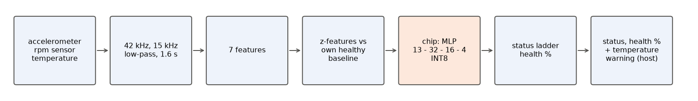
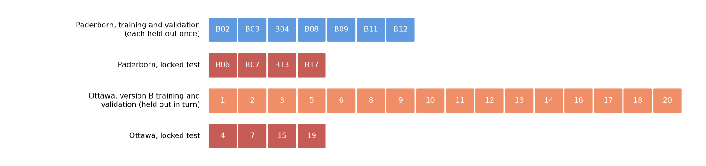
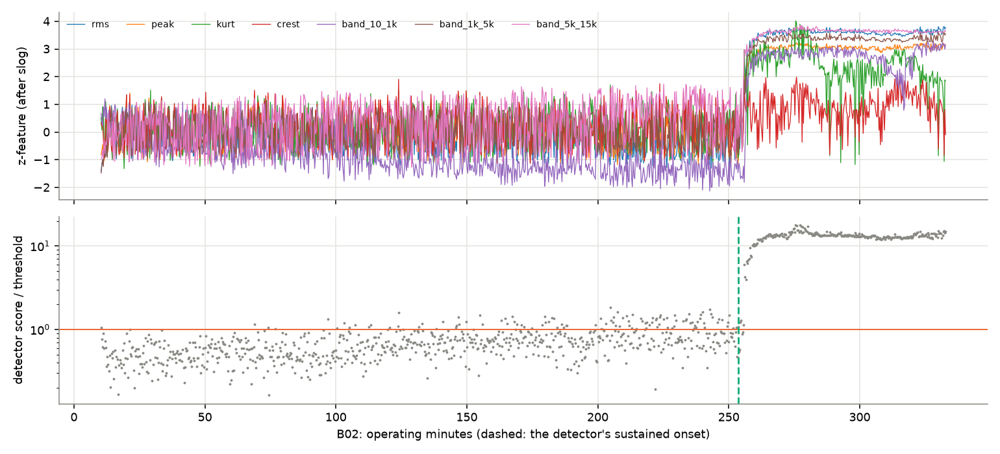
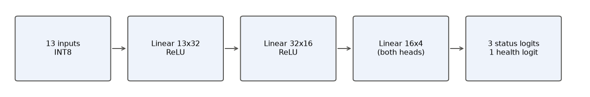
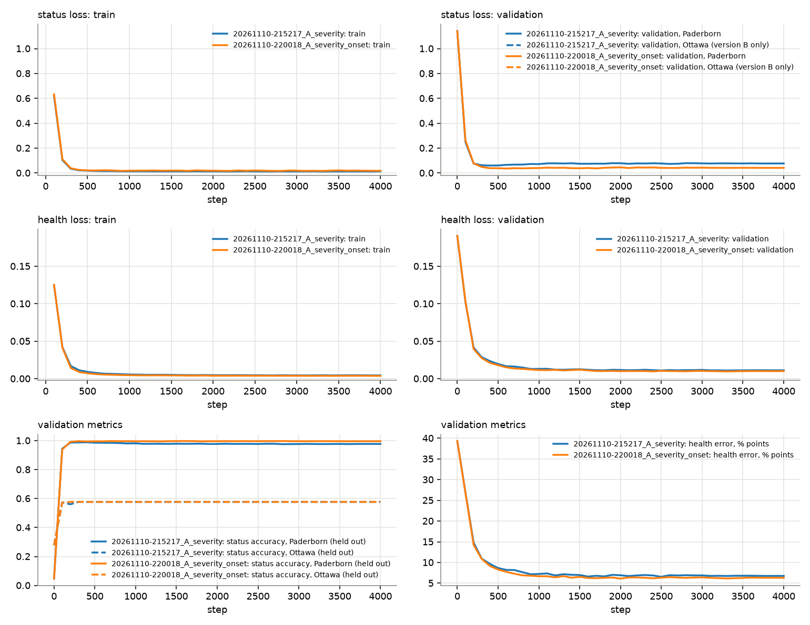
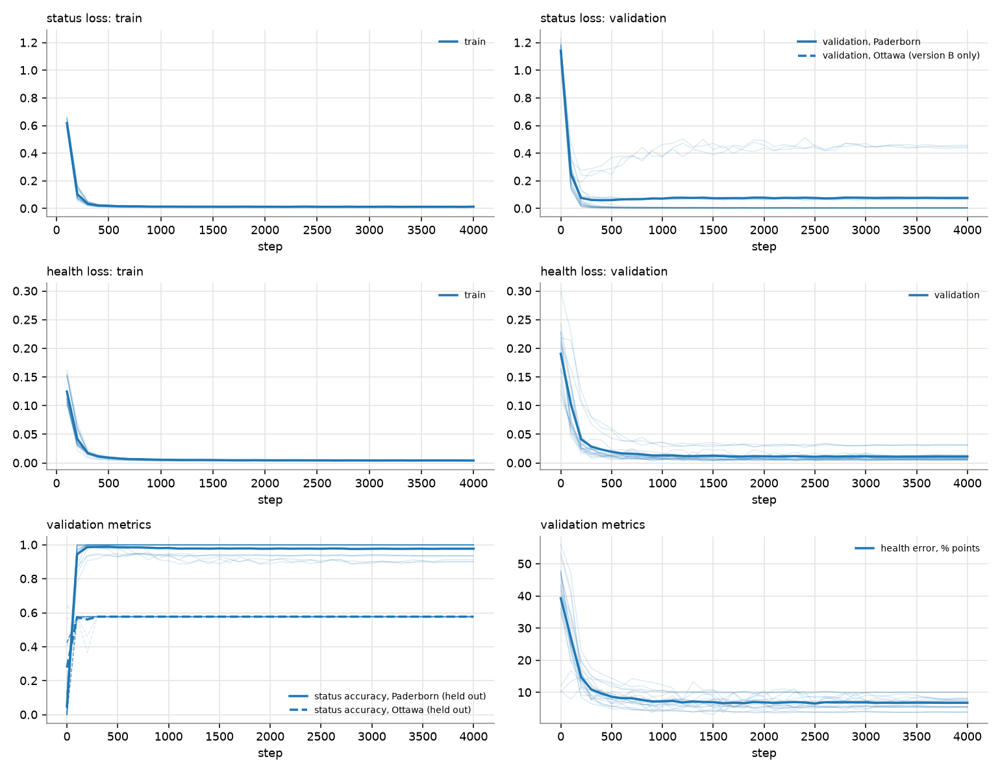
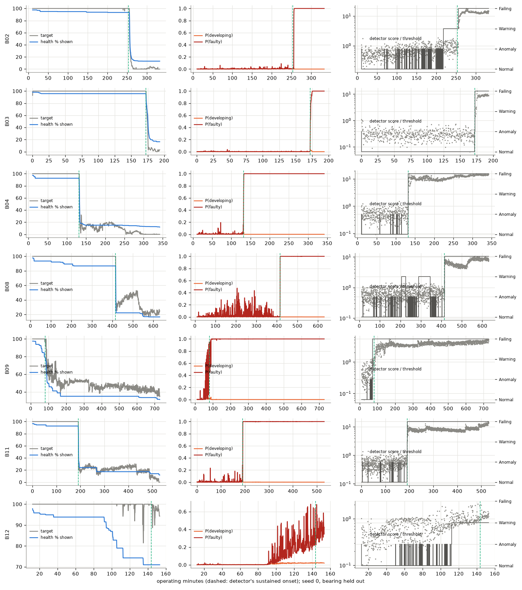
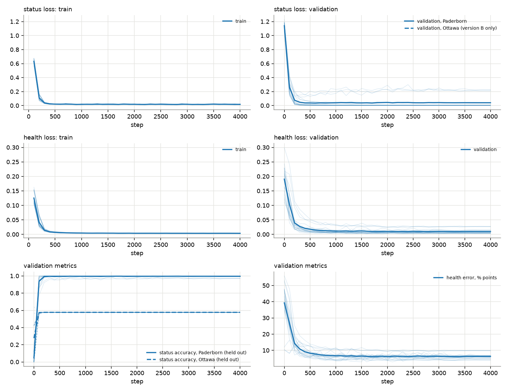
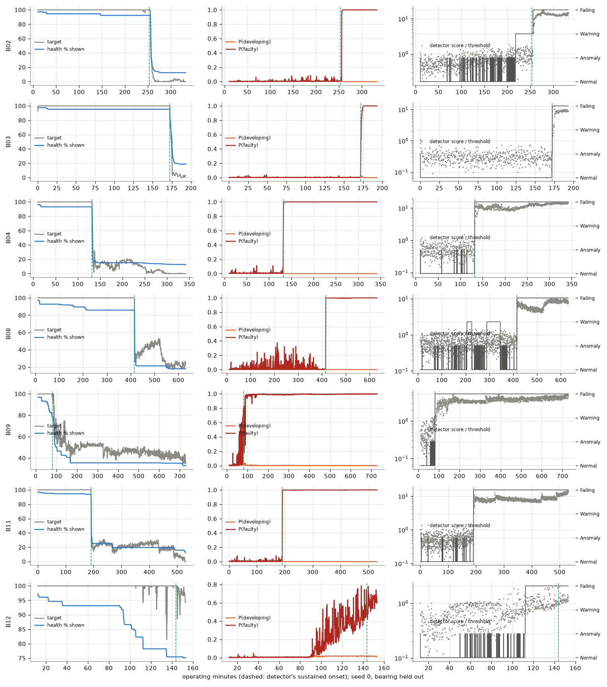
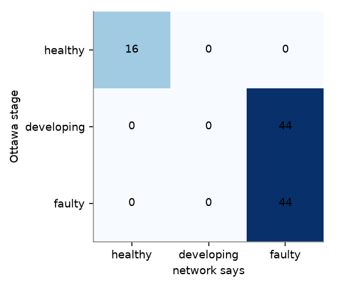

A vibration sensor on a motor bearing is measured for 1.6 s at a time. A host processor turns each measurement into 13 numbers that say how far the bearing has moved from its own healthy start. A small neural network on the chip (the INT8 systolic-array MLP accelerator) turns those numbers into a status (healthy, developing or faulty) and a health value. The host combines them into one of four levels (Normal, Anomaly, Warning, Failing) and a health percentage.

| dataset | role | bearings | recordings | rows / windows | sample rate | resampled |
|---|---|---|---|---|---|---|
| Paderborn run-to-failure | trains both heads; validation | 7 | 8943 | 8943 | 128 or 64 kHz | to 42 kHz |
| Ottawa UORED-VAFCLS | trains the status head in version B only; validation | 16 | 48 | 416 | 42 kHz | no |
Both datasets go through the same signal chain: the offset is removed, the signal is resampled to 42 kHz with an anti-aliasing filter where needed, and low-passed at 15 kHz. A Paderborn row is one 1.6-s measurement taken every 12 to 23 s until the bearing fails. An Ottawa recording is 10 s long and is cut into 1.6-s windows with 50 % overlap; each bearing has one healthy, one developing and one faulty recording. The Ottawa files also have a temperature-difference column (median by stage {'0': 1.7, '1': 13.4, '2': 29.8}); it is not used, and it is corrupt in 2 recordings (bearing 16 stage 1, bearing 17 stage 2).
| Paderborn bearing | rows | healthy (label) | faulty (label) | unlabelled | baseline starts at row | onset, min before end |
|---|---|---|---|---|---|---|
| B02 | 1065 | 150 | 20 | 895 | 0 | 79 |
| B03 | 614 | 150 | 20 | 444 | 0 | 21 |
| B04 | 1064 | 150 | 20 | 894 | 0 | 210 |
| B08 | 1777 | 150 | 20 | 1607 | 0 | 215 |
| B09 | 1763 | 150 | 20 | 1593 | 0 | 647 |
| B11 | 1953 | 150 | 20 | 1783 | 0 | 340 |
| B12 | 707 | 150 | 20 | 537 | 60 | 9 |
Healthy = the 100 baseline measurements and the 50 after them. Faulty = the last 20 measurements before the documented stop; these are the labels every result is scored on. For training only, every measurement after the detector's sustained onset is also labelled faulty, so the network learns moderate, sustained damage as well as the end stage. Ottawa windows: 64 healthy, 176 developing, 176 faulty.

The bearing is the unit: all rows of a bearing are in the same set. Validation is leave-one-bearing-out: each Paderborn development bearing is held out once and scored by networks that never saw it. The locked bearings are not loaded by any script until a model is frozen, and are then tested once. Version A trains on Paderborn only. Version B also trains the status head on the Ottawa development bearings, held out in the same folds.
| feature (per 1.6-s window) | formula |
|---|---|
| rms | ln of the root-mean-square |
| peak | ln of the largest |x| |
| kurt | mean((x - mean)^4) / rms^4 |
| crest | peak / rms |
| band_10_1k | ln RMS of the 10 Hz - 1 kHz band (FFT) |
| band_1k_5k | ln RMS of the 1 - 5 kHz band |
| band_5k_15k | ln RMS of the 5 - 15 kHz band |
Baseline: on a bearing's first 100 measurements each feature is fitted as b0 + b1 ln(rpm) (the rpm term only if the speed varied), with spread sigma. A step inside those 100 measurements restarts the baseline after the step. z = (feature - fit) / sigma. The detector score is s = sqrt(mean(z^2)); its threshold tau is the 99th percentile of s on the baseline. The 13 network inputs are: the 7 z-features; 3 ln(s); the mean of z over the last 4 measurements for rms, band_1k_5k, band_5k_15k and kurt; and 4 ln(rpm / 2000). Each goes through slog(v) = sign(v) ln(1 + |v|). There is no time, row-number or temperature input. An Ottawa bearing has no 100-measurement start: its baseline is the 5 windows in the first 5 s of its healthy recording, with no rpm term, and the 4 windows in the last 5 s are its healthy examples. So short a baseline under-estimates the spread, so sigma is never allowed below a fixed floor per feature {'rms': 0.04, 'peak': 0.08, 'kurt': 0.04, 'crest': 0.29, 'band_10_1k': 0.07, 'band_1k_5k': 0.05, 'band_5k_15k': 0.056} (the smallest baseline sigma seen on the Paderborn development bearings, which it therefore leaves unchanged).


992 weights and 52 biases. On the chip: INT8 weights with one scale per output channel, INT32 biases, one input scale (0.07252 per step), ReLU, and a per-channel multiply-and-shift between layers. The last layer returns raw sums; the host adds its bias and scale. 'Developing' is labelled only in Ottawa, so only version B can learn it; Ottawa never trains the health head.
Host logic, per measurement. Normal: detector score at or below its threshold. Anomaly: score above the threshold on this measurement; clears itself. Warning: score above the threshold 3 measurements in a row; clears after 20 quiet ones. Failing: the network says 'faulty' 3 measurements in a row; stays on. Health %: 100 x sigmoid(health logit), median of the last 4 measurements, shown as a running minimum so it never rises. Temperature (separate, not a network input): on when the housing temperature is more than 6 C above its own median over the previous 50 measurements, 3 in a row; the first 60 minutes after a start or stop are ignored.
| bearing | temperature rule on before onset (rows / rows) | first on, min before the end |
|---|---|---|
| B02 | 0/804 | never |
| B03 | 0/546 | never |
| B04 | 0/389 | never |
| B08 | 0/1162 | 11 |
| B09 | 0/171 | never |
| B11 | 0/703 | never |
| B12 | 0/659 | never |
1. A batch of 64 rows is drawn: half with a status label (every dataset-and-class group equally likely), half with a health target (before and after onset equally likely). 2. Each row's history length is drawn from 1 to 4. 3. Loss = cross-entropy over the 3 status logits on the status half + mean squared error between sigmoid(health logit) and the health target on the health half; each half trains only its own head, so the health head is trained identically in versions A and B. Validation losses are class-balanced the same way. 4. Adam, learning rate 0.001 falling to 0 on a cosine, weight decay 0.01, 4000 steps, no early stopping. 5. Repeated for every held-out bearing and seeds [0, 1, 2], plus one network per seed on all development bearings (the exported one). Health target = severity of the detector score (median of the last 4 measurements): 100 % at a score of 2.5 or less, which healthy operation stays below, falling with the logarithm of the score to 0 % at 25, a typical end-stage score.
Run 3 (the old model/ network, 8-32-16-2, its own validation folds and inputs) on the same bearings:
| held-out bearing | end caught (seeds) | healthy rows alarmed / possible | alarm, min before onset |
|---|---|---|---|
| B02 | 5/5 | 0/500 | -3 |
| B03 | 5/5 | 0/500 | -4 |
| B04 | 5/5 | 0/500 | -2 |
| B08 | 5/5 | 0/500 | -1 |
| B09 | 5/5 | 0/500 | -1 |
| B11 | 5/5 | 0/500 | -2 |
| B12 | 0/5 | 0/500 | nan |
Run 3 has no health error: its health head was never trained.
All runs overlaid (mean over folds and seeds):


| held-out bearing | end caught (seeds) | healthy rows alarmed / possible | Failing, min before onset | health error before onset, % | after onset, % |
|---|---|---|---|---|---|
| B02 | 3/3 | 0/450 | -3 | 3.3 | 12.3 |
| B03 | 3/3 | 0/450 | -1 | 2.4 | 15.3 |
| B04 | 3/3 | 0/450 | -1 | 4.1 | 8.8 |
| B08 | 3/3 | 0/450 | -1 | 4.4 | 7.5 |
| B09 | 3/3 | 0/450 | 8 | 6.5 | 8.1 |
| B11 | 3/3 | 0/450 | -1 | 3.4 | 10.0 |
| B12 | 0/3 | 0/450 | nan | 9.2 | 21.9 |
Negative minutes mean Failing came after the detector's sustained onset; 'nan' means it never came.

P(developing) on held-out Paderborn bearings: 0.004 on healthy rows, 0.015 between onset and Failing, 0.001 after Failing; before onset 0.007 at 1700-1900 rpm (Ottawa's speed) against 0.005 at other speeds. It should be near 0 on healthy rows, rise after onset, and not depend on the speed. Hidden-layer dataset probe AUC: 0.66 (0.5 = the network cannot tell the datasets apart).
Ottawa held-out bearings, seed 0: healthy windows called healthy 1.00, damaged windows called faulty 1.00 (this version has no 'developing' examples, so a stage accuracy would be capped by construction); health % by stage [97.0, 23.0, 18.0]; it falls healthy > developing > faulty on 12 of 16 bearings.
INT8 vs FP32: 0.045 % of status decisions change, health differs by at most 2.30 % points, Failing row identical: False. RTL bit-exact: True.

| held-out bearing | end caught (seeds) | healthy rows alarmed / possible | Failing, min before onset | health error before onset, % | after onset, % |
|---|---|---|---|---|---|
| B02 | 3/3 | 0/450 | -3 | 3.6 | 12.2 |
| B03 | 3/3 | 0/450 | -1 | 2.6 | 16.4 |
| B04 | 3/3 | 0/450 | -1 | 3.9 | 8.4 |
| B08 | 3/3 | 0/450 | -1 | 4.4 | 6.0 |
| B09 | 3/3 | 0/450 | -1 | 6.6 | 6.6 |
| B11 | 3/3 | 0/450 | -1 | 3.2 | 7.9 |
| B12 | 3/3 | 0/450 | 31 | 9.2 | 20.2 |
Negative minutes mean Failing came after the detector's sustained onset; 'nan' means it never came.

P(developing) on held-out Paderborn bearings: 0.004 on healthy rows, 0.014 between onset and Failing, 0.003 after Failing; before onset 0.007 at 1700-1900 rpm (Ottawa's speed) against 0.006 at other speeds. It should be near 0 on healthy rows, rise after onset, and not depend on the speed. Hidden-layer dataset probe AUC: 0.64 (0.5 = the network cannot tell the datasets apart).
Ottawa held-out bearings, seed 0: healthy windows called healthy 1.00, damaged windows called faulty 1.00 (this version has no 'developing' examples, so a stage accuracy would be capped by construction); health % by stage [97.0, 21.0, 16.0]; it falls healthy > developing > faulty on 12 of 16 bearings.

INT8 vs FP32: 0.063 % of status decisions change, health differs by at most 2.17 % points, Failing row identical: True. RTL bit-exact: True.
| locked bearing | end caught | healthy rows alarmed / possible | Failing, min before end | health error before onset, % | after onset, % |
|---|---|---|---|---|---|
| B06 | yes | 0/150 | 957 | 5.0 | 51.0 |
| B07 | yes | 0/150 | 102 | 4.7 | 12.2 |
| B13 | yes | 0/150 | 360 | 5.1 | 5.4 |
| B17 | yes | 0/150 | 196 | 2.9 | 6.2 |
Locked Ottawa bearings: stage accuracy 0.58, healthy called healthy 1.00, damaged called faulty 1.00, health % by stage [97.0, 16.0, 13.0].

Three checks were run before any training, and all three failed. Version B trains on Ottawa anyway, beside version A, so the two can be compared; its 'developing' output should be trusted only if the checks in section 6 hold.
1 Ottawa stages vs recording-to-recording spread: FAIL

2 Healthy rows, Paderborn vs Ottawa: FAIL

3 Ottawa signal above 10 kHz: FAIL

Only 7 Paderborn bearings carry the training; every number here has wide uncertainty until the locked test. Health % is a severity scale of the vibration now, not a countdown to failure: it levels off when the vibration does, and a bearing whose end stage is close to its baseline (B12) stays near 100 %. After B12's baseline restart its end stage is only 1.2 x its detector threshold (lowest of the other bearings: 5 x), so B12 is the hardest bearing to catch. The temperature rule's limit was set on these same bearings, and temperature only rises at the very end on some of them, so it is a backstop for fast overheating, not an early warning. Version A cannot report 'developing'; version B learns it from Ottawa only, where stage and recording differences are mixed. Ottawa recordings differ from each other in ways that are not damage (offset and level change between recordings), so Ottawa results are indicative only. The status ladder's settings are host-side and were not tuned. The model has not run on the board.